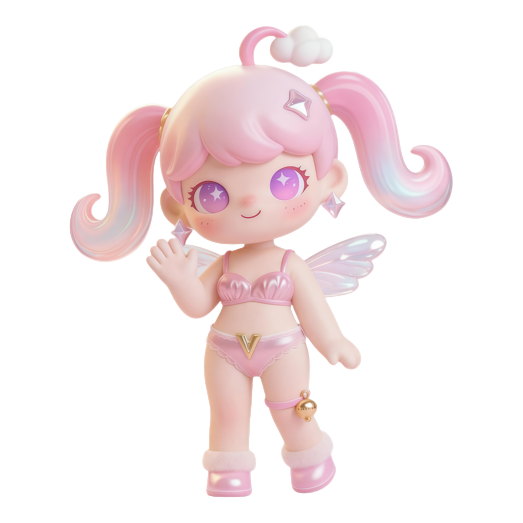
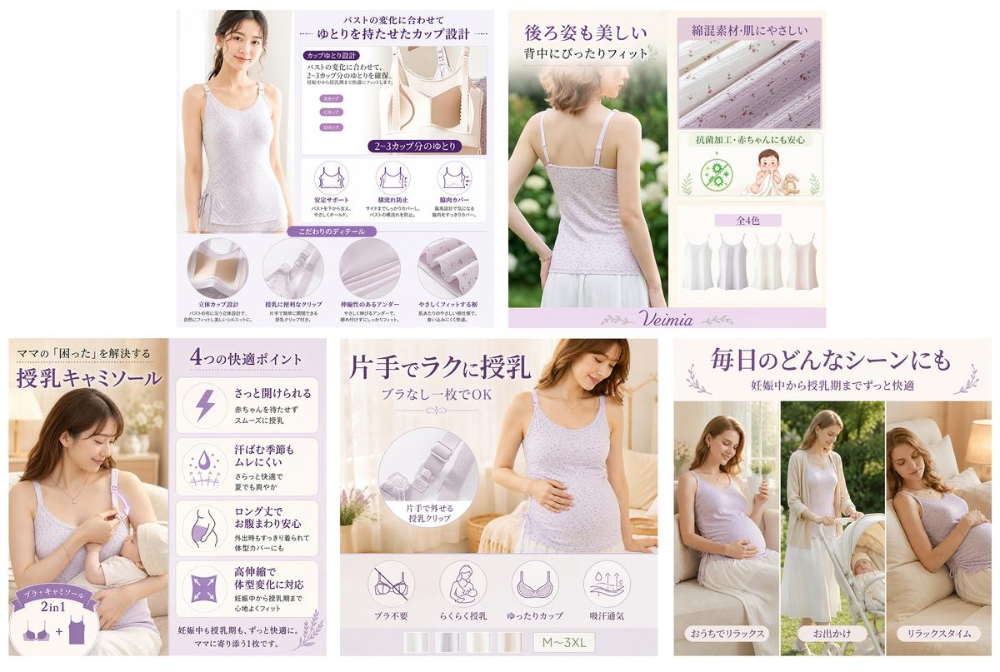
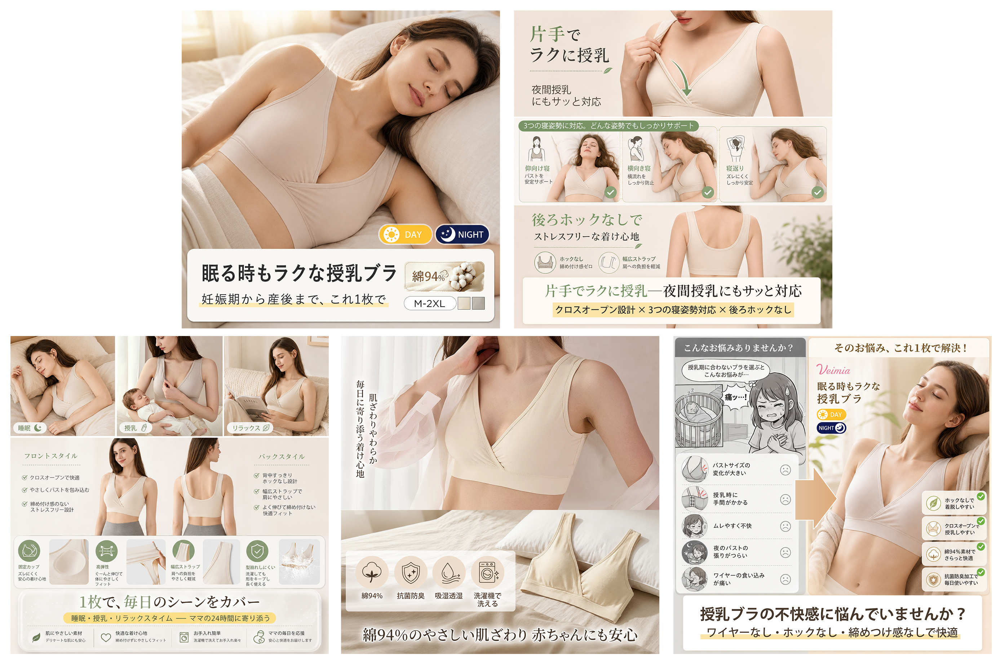
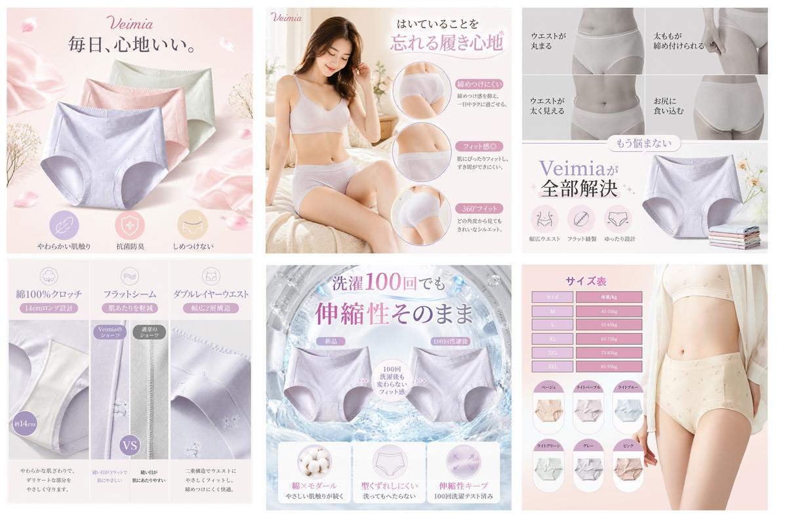

Visual Designer · AI Designer · Brand Designer
2026年度 Veimia竞聘述职
基于结果导向、目标拆解、带队育人、创新意识与AI应用四大维度设计
姓名：李晓涵竞聘岗位：设计产品小组组长

Experience
个人经历回顾
上次落选让我想明白了一件事：光靠个人执行力撑不起一个团队。这半年的实践就是我的答卷。
半年前 · 落选与反思
半年前曾有过一次竞聘经历，挺遗憾的以失败告终。当时每天确实很忙，忙着救火。也是后来才意识到其实自己角色认知出现了问题：我一直在当最强的执行者，而不是体系搭建的管理者——没有去建机制、建标准，导致大家只能等我的指令，团队跑不起来。
"组长该交付的不是工作量，而是一套能自己跑的机制——不依赖某一个人的英雄主义。"
半年实践 · 围绕目标落地动作
想明白这件事之后，我给自己定了一个反直觉的目标——从团队里最忙的人，变成最"闲"的那个人。因为只有我从执行里抽身，才能站到更高的视角去系统地思考问题、做根本的建设，不然会一直在员工视角里救火。围绕这个方向，我开始做了一系列具体调整。
Results
实践成果
半年时间，不是靠加人加班，是靠体系和方法。完成74个产品上新，共计204次站点交付。
Actions
目标拆解与落地
围绕提升质量和产能翻倍的核心目标展开
我的拆解逻辑：产量翻倍意味着效率必须翻倍——往哪里找效率？我从三个方向切入：质量止血、时间释放、人员提能。
📏
01 · 质量方向
质量标准缺失导致反复返工，先建规范止血
⏱️
02 · 时间分配方向
时间结构不合理，重新梳理优先级释放产能
👥
03 · 人员能力方向
能力参差拖慢整体节奏，因材施教让每个人有方向
01 · 质量方向
让"做对"不靠人的自觉
洞察：图片因排版、模特、表现力风格等细节频繁返工。设计师觉得"我明明按需做完了为什么又要改"——我判断这不只是质量问题，本质是标准缺失。没有标准的时候，每次交付都在"猜"，猜错就返工。
久了团队不只是效率低，而是"怕做错"——这比返工本身更危险。
原因拆解与优先级判断：为什么会反复返工？我找到了三层原因：
内部标准规范缺失 · 设计师对目标市场和品类展示逻辑缺少专业认知 · 新人缺少现成的参照物兜底
三层原因里，我判断标准缺失是第一优先级——它是唯一能立刻止血的。品类认知是中期能力建设，案例库是长期飞轮。我的节奏：止血 → 治本 → 造飞轮。
01 · 质量方向 · 落地动作
三层解法 + 闭环
🎯
治本：提升品类认知
让设计师不只是"接到需求就动手"，而是先理解这个品类该怎么呈现。通过参与目标市场调研、沉淀品类经验、输出风格指引，真正理解"为什么要这样做"
📦
飞轮：素材库·模板库
优秀案例沉淀为参照物，新人有物可依，老人有标杆可对齐——团队最差的图也不会差太远
三层解法落地后，怎么保证持续有效？——闭环：复盘机制
产品上线后复盘，沉淀经验反哺规范——形成"制作→上线→复盘→优化"的持续改善闭环。即使没人盯着，规范也在被持续更新。
结果：从"怕做错"到"知道边界在哪" · 返工率明显下降 · 团队状态更积极
01 · 质量方向 · 持续迭代
从"做对"到"做好"
以上是已经做完并且看到效果的。但管理不是做完就停——规范上线后返工确实降了，但我最近发现了一个更隐蔽的问题——
大家按定义表做了，出来的图也没有明显的"错"，但我看得出来：设计师只是复刻了参考截图的排版逻辑，没有真正转化为目标市场的视觉语言。
这种问题比"做错"更难被发现——因为它看起来"合格"，但离"专业"还有一步。
我的判断：定义表截图只是"表达方向"，不是最终标准。设计师完全可以结合市场认知做本土化转化。下一步就是把团队从"能完成需求"推向"能读懂需求、超越需求"。
02 · 时间分配方向
发现真正的瓶颈
发现问题：原来上新占70%、日常修改和亚马逊占30%。随着亚马逊选品激增，开始侵占上新时间——产量翻倍的前提下，这个时间结构已经撑不住了。
我的决策：产能不够时有三条路——加人、加班、砍流程。前两条治标不治本，我选择从流程上消灭不该存在的环节。提效不是让人做得更快，而是从结构上重新分配时间。
02 · 时间分配 · 亚马逊流程重构
重构亚马逊作图流程
1天 → 2~3小时/品
判断：亚马逊和独立站用的是同一套模特图和卖点素材，区别只是排版结构。这意味着"重新排版"这个动作是可以被AI替代的——不需要设计师重新动手。
原流程：独立站图完成 → 运营重新提需 → 设计师手动重新排版 → 翻译审核 → 来回修改。一个品大约需1天。
新流程：独立站整套图喂给GPT → AI分析内容自动排版 → 翻译审核 → 交付运营。一个品2~3小时。
质量把控：运营担心AI出图有风险，我通过提示词严格约束打消顾虑——必须使用独立站原有的模特图和卖点图，AI只负责排版重构，不改动核心素材。实际效果发现AI排版甚至更本土化。



02 · 时间分配 · 工具开发
针对高频耗时点开发工具
诊断逻辑：我梳理了上新全流程，把每个环节按"需不需要设计能力"分类——不需要创意判断的机械环节，就不该占用设计师时间。
· 尺码表自动生成 → 20min → 30秒/三站
· 快速捆绑生成器 → 30min → 1min
· 快速白底图换色工具 → 20min → 1min
结果：上新产能翻倍 · 亚马逊从占用1天变成2小时收工 · 设计师的时间真正回到了上新主线上
03 · 人员能力方向
能力参差，因材施教
洞察：团队每个人能力和性格差异很大，但之前"统一标准、统一要求"——强的人没方向，弱的人没支撑，中间的人不知道往哪使劲。
我的策略：按能力和主动性分层，给不同的人不同的培养路径 ↓
📣
能力强+主动性一般
用"输出倒逼成长"，让她教别人
日常通过定期1v1跟进每个人的状态和进展，确保培养有节奏地持续推进。
03 · 人员 · 因材施教
每个人的培养动作与变化
雪雪：给AI课题方向，从“个人用AI”转向“带动团队AI应用”
红红：组织排版分享会，用“教”倒逼梳理方法论
莹莹：优先英韩站放大优势，分享会补日站短板
梦阳：给清晰阶段目标和品类深耕方向
肖杰：多正向反馈公开认可，从默默做变主动表达
03 · 人员 · 带来的变化
带来的变化
01 · 开始建立各自的专长方向
不再是"你自己想办法"，每个人有了明确的成长方向
02 · 经验开始在团队内流动
红红做排版分享、雪雪做AI输出，知识不再只留在个人手里
03 · 分工更清晰，救火少了
谁擅长什么、谁往哪走逐渐清楚，分任务不再纠结，管理精力开始往规划上转
"核心逻辑：把'对人的依赖'转化为'对体系的依赖'——新人来了有路径可走，骨干有空间可成长，管理者的精力从'填补下限'转向'拉高上限'。"
Collaboration
协同推动
对内的三个方向解决了团队自身的效率问题，但产能翻倍不是关起门能做到的——上下游链路顺不顺，直接决定整体节奏。
我的协同观：如果我的组快了，但上下游反而更卡了，那不叫提效，叫转移矛盾。我做的每一个决策，出发点是"整条链路怎么跑得更顺"。
📋
多部门进度对齐：搭建协作多维表
问题：产品开发表信息量太大，设计/翻译/编辑各看各的，进度对齐全靠口头追问。
动作：主动从原表中提取关键信息，搭建一站式进度跟进表，三站有动作都能即时同步。
结果：多部门协作从"各看各的表"变成"一表全通"。
🔗
新流程协作卡点：主动梳理+月度复盘
问题：新工作流翻译前置后，各岗位都在适应期，协作中的卡点容易反复出现但没有被持续跟进。
动作：站在设计端，主动梳理每月遇到的卡点，拉相关人对齐职责边界，建立每月复盘高频问题的机制，持续反馈推动优化。
结果：流程衔接顺畅，同类问题复发率明显下降。
🌐
新站翻译瓶颈：主动找AI方案解决
问题：马来语、台湾站等新站涌入，等文案组排期会卡住整体上线节奏。
动作：主动找AI翻译工具解决手动替换的低效模式，目前已在日常使用中；后续计划协调研发资源搭建更自动化的翻译流程。
结果：新站点上线节奏不因设计环节卡住。
协作不是"我帮你做你的事"——是理解对方的节奏和局限，在自己能做的范围内主动配合、主动反馈、主动借力。比如我们知道产品在某些品上生图遇阻可能会影响整体进度，便会主动参与前置协助生图。不甩锅，不等待，让整个链路跑顺畅。
Impact · 对内
赋能与带动 · 团队AI赋能
协同解决的是整体链路上的卡点。但还有一层更长远的事——不只帮人解决问题，而是让更多人具备自己解决问题的能力。
为什么我要花精力做这件事：AI是未来设计团队的基础能力。如果只有少数人会用，团队的效率天花板就是少数人的上限。我需要把AI能力从"个人优势"变成"团队的基础设施"。
现状判断：大家不排斥AI，但日常节奏快，尝试是散点式的，缺的不是意愿，是方向和持续推动的人。
我的策略：激发探索（鼓励每个人都去尝试不同方向，覆盖面越广概率越大）→ 陪跑支持（谁在探索中遇到卡点，我就介入帮她优化思路、调提示词、判断场景是否可行）→ 正反馈+沉淀（做出成果就公开认可，同时纳入AI案例库，让个人探索变成团队资产）。
结果：团队从"不知道AI能干嘛"变成主动探索、互相讨论、自己找方向深入。AI能力不再依赖我一个人推动，开始自己生长。
Impact · 对外
跨部门赋能
不只解决自己团队的问题——主动跨出本部门，用工具和方法论为其他部门创造价值。
🛠️
做工具解决实际问题
发现协作部门有痛点，判断可行后主动动手。给编辑部做了捆绑图工具和买家秀生成器，已落地投入使用。
🎓
输出方法论而不只是工具
通过开跨部门培训，不只教工具怎么用——而是从怎么发现痛点、怎么判断值不值得做、到怎么落地，把整套思维方式拆给同事，提升各部门对业务的拆解能力和AI使用能力。
🧭
逐渐成为AI方向的协作节点
其他部门同事遇到AI相关问题会主动来找我聊可行性、探讨思路。从"帮忙做"变成"一起想"，影响力从个人延伸到了组织。
一个人做工具只能解决一个点。但当我开始输出思维方式、被更多人信任时，影响力就从"帮忙"变成了"赋能"——推动大家学会用新方法解决老问题。
Innovation
创新与AI应用
前面讲了"我怎么诊断问题、怎么决定做什么"，这个板块展示我的创新方法论和具体产出。我不是技术出身，做工具不是因为兴趣，是因为有些环节天然就是机械的、重复的、不应该由人来做的。
我的底层逻辑：起点不是"我会什么AI工具"，而是"业务里哪些动作在反复消耗人力"。正确的顺序是：从业务痛点出发，找到适合工具化的场景，再决定用什么技术解决。
什么场景值得做？
① 高频 — 每天或每周都在发生的动作
② 影响交付结果 — 直接关联效率、成本或质量
③ 可标准化 — 输入输出相对清楚，不依赖主观判断
怎么落地？
01 拆动作——把流程里重复、耗时、可描述的环节拎出来
02 最小交付——先做一个能省时间的小方案，不追求大系统
03 真实验证——给实际使用的人跑，能用再迭代，不能用就换方向
总结
创新不是自己做几个工具，而是——持续审视工作流程中的低效环节，判断哪些适合用AI改造，推动团队建立"发现问题→评估可行性→最小验证→规模化"的创新习惯。
Innovation · 已落地工具
工具产出
📐 尺码表自动生成
多站点尺码表制作，人工填数据高频出错
20min→30秒/三站，错误率→0
📦 快速捆绑生成器
捆绑信息频繁调整，设计师产能被占用
30min→1min，编辑自助，双部门提效
📸 买家秀生成器
买家秀素材产出
AI辅助生成场景图，日常使用中
Innovation · 重点项目
AI模特工具箱
从产品平铺图到模特展示图，全链路覆盖。一个人从0搭建的覆盖"产品图→模特图"全链路AI工具系统，从需求发现到界面搭建全程独立完成。
目的不只是提效——也是为了解决产品部多工具并行导致的出图质量不稳定问题，统一系统让产出质量可控。7月新品已完成模特测试，下月开始赋能产品部试跑。
Future
未来规划
01 · 设计师角色重塑
在AI的大环境下，设计师最大的价值不再是执行本身，而是对业务的理解和认知。AI可以放大执行效率，但理解"该做什么、为什么这样做"只能靠人。所以下一步要帮助团队做业务方向的深耕，用AI释放执行时间，把精力投入到成为品类和市场的专家上。同时把输入端的内容标准前置，在需求阶段就对齐好方向，降低返工率。
02 · 出品质量深化
我注意到销量好的品基本集中在背心裤子内裤类，内衣本身很少爆——说明内衣品类需要在展示效果上下更多功夫。下一步要通过本土化风格研究+品类表达力训练，让团队具备"图要说什么话"的意识，从"好看"走向"有效"。
03 · AI生产体系化
目前是针对卡点做专项工具，下一步要走向可维护的正轨工作流——借助N8N、Kiro等AI工具搭建自动化流水线，把生图、排版、翻译等环节串联起来，而不是依赖单点工具无脑堆叠。最终目标：团队产能不再受人力线性限制。
04 · 个人成长
下一阶段会更主动地与上级同步信息、获取方向输入，让自己的判断和行动与组织整体目标保持对齐——不只基于团队视角，也融入业务全局视角。
Thank You
感谢大家
我的管理经验不算丰富，很多东西是在做的过程中一点点摸索出来的。
但我最大的优势是：愿意花时间想怎么让事情变得更好，也愿意动手把想法变成现实。
接下来的路还很长，我会继续陪着Veimia往前跑。
1 / 21
.png)
.png)
.png)
.png)
.png)
.png)
.png)
.png)
.png)
.png)
.png)
.png)
.png)
.jpg)
.jpg)
.jpg)
.jpg)